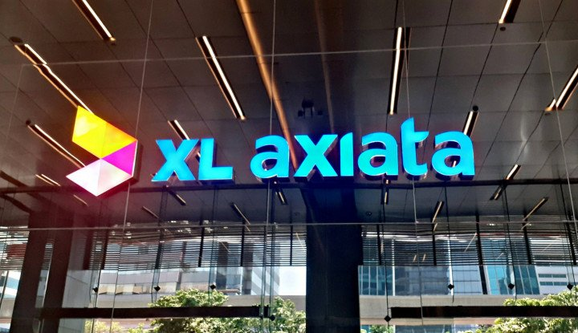

Laba XL Axiata Turun 51 Persen di Q3 2021

-
Emiten telekomunikasi PT XL Axiata Tbk. mengalami penurunan laba bersih secara tahunan hingga kuartal III/2021. Penurunan tersebut akibat turunnya keuntungan dari penjualan dan sewa balik menara telekomunikasi. Berdasarkan
laporan keuangan per 30 September 2021 dikutip Selasa (9/11/2021), laba yang dapat diatribusikan kepada pemilik entitas induk menjadi Rp1,01 triliun turun 51,03 persen dari 9 bulan tahun lalu sebesar Rp2,07 triliun. Turunnya
laba bersih tersebut lantaran penurunan keuntungan dari penjualan dan sewa balik menara yang menjadi hanya Rp313, 29 miliar per kuartal III/2021, sedangkan pada kuartal yang sama tahun lalu berhasil memperoleh keuntungan Rp1,97
triliun.
-
Pada kuartal III tahun lalu, EXCL telah menyelesaikan penjualan atas 2.688 menara dan sewa balik sebagian ruang untuk sebagian menara dengan Protelindo dan PT Centratama Menara Indonesia (CMI) dengan nilai transaksi Rp3,8
triliun. Dari penjualan tersebut, terdapat porsi penerimaan sebesar Rp1,98 triliun. Jumlah ini menjadi penerimaan yang dapat diatribusikan dari proporsi hak yang dialihkan ke Protelindo dan CMI sehingga dicatat sebagai arus kas
dari aktivitas investasi. Adapun, pada kuartal III tahun ini dan per 31 Desember 2021, EXCL telah menyelesaikan transaksi penjualan dan sewa balik atas masing – masing sebanyak 353 dan 143 aset infrastruktur telekomunikasi dalam
ruang (picocell) dengan PT Dhost Telekomunikasi Nusantara (Dhost) dengan nilai transaksi masing-masing sebesar Rp272,58 miliar dan Rp106,52 miliar.
-
Dengan demikian, pembeda kinerja keuangan per kuartal III/2021 ini terutama karena tidak terjadi penjualan menara secara masif seperti yang dilakukan pada kuartal III/2020 saat EXCL menghasilkan keuntungan yang dapat
diatribusikan. Kendati demikian, beban-beban lainnya mengalami penurunan diantaranya beban penyusutan yang turun menjadi Rp7,41 triliun, beban infrastruktur Rp5,95 triliun, beban penjualan dan pemasaran Rp1,88 triliun, Beban
interkoneksi dan beban langsung lainnya Rp1,03 triliun, beban gaji dan kesejahteraan karyawan Rp803,94 miliar, beban umum dan administrasi Rp221,32 miliar. Pendapatan emiten berkode EXCL menjadi Rp19,8 triliun naik 0,73 persen
dibandingkan dengan Rp19,65 triliun per periode yang sama tahun lalu. Dari sisi beban, terjadi kenaikan beban EXCL menjadi Rp16,84 triliun per kuartal III/2021 dari Rp15,36 triliun per kuartal yang sama tahun lalu. Sementara
itu, jumlah aset perseroan naik menjadi Rp68,58 triliun per 9 bulan 2021 naik dibandingkan dengan Rp67,74 triliun per akhir tahun lalu